Fashion campaign · Amorini Concept · Baku, June 2026
Feminist slogans, worn by a young man
In June 2026 Jamal Naghizade worked with Amorini Concept, an art and fashion brand in Baku, on a set of T-shirts printed with feminist slogans. He helped shape the slogans and the shirts, and he was the model in the campaign photographs. The aim was to show that young people in Azerbaijan, young men included, support equal rights for women.
- 5
- slogans printed on the shirts
- 3
- roles: model, slogans, shirt design and styling
- 1
- fashion show, walked as a model
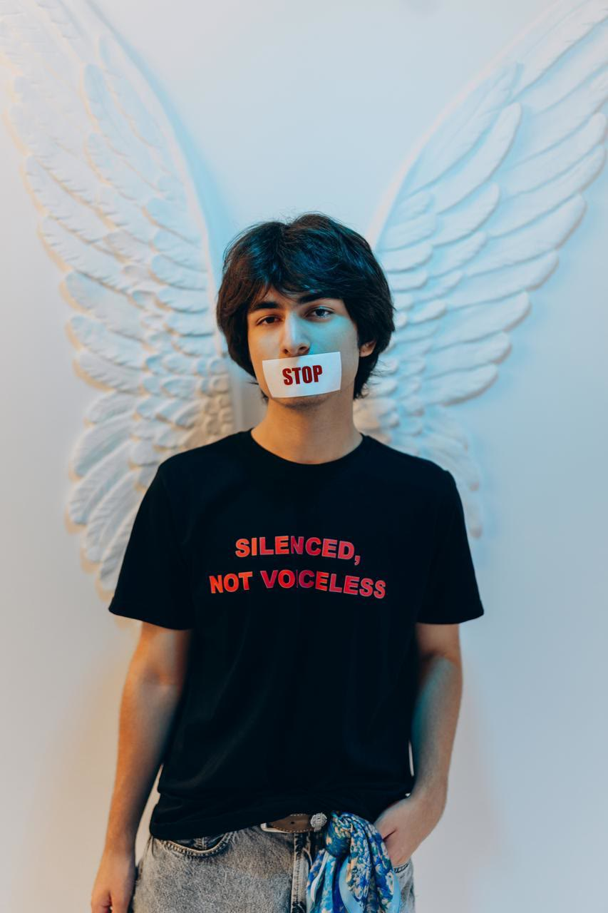
The campaign
Why a young man in a feminist T-shirt
Amorini Concept is a Baku brand founded by Günay Aliyeva. It works with Azerbaijani artists and turns their paintings into prints for clothes, scarves and cushions. Carpet patterns and the pomegranate, a fruit closely tied to Azerbaijani culture, appear in many of its designs, and both can be seen in the backgrounds of these photographs.
For this campaign the brand printed short feminist slogans on plain black and white T-shirts. The campaign had no official name. The shirts were meant to carry the message on their own.
The choice of model was part of the message. In Azerbaijan, as in many countries, women's rights are often treated as a subject only women talk about. Putting the slogans on a young man was a way of saying that his generation, boys and men included, stands behind them.
The shirts
Five slogans and one painting
Each shirt carries one short line. Choose a slogan to see the photograph and the idea behind it.
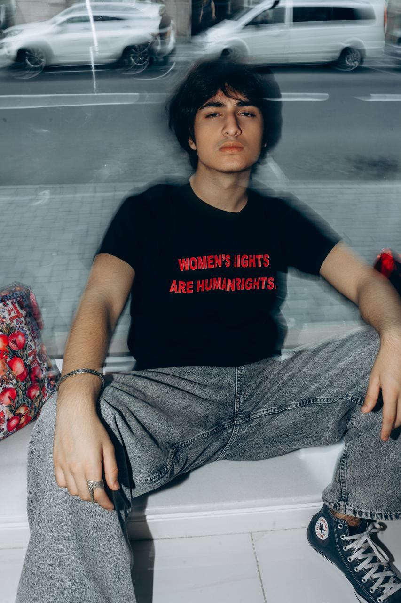
Where it comes from
The phrase was used at the UN Fourth World Conference on Women in Beijing in 1995 and was written into the declaration adopted there. Its point is that women are not asking for special rights, only for the rights everyone else already has.
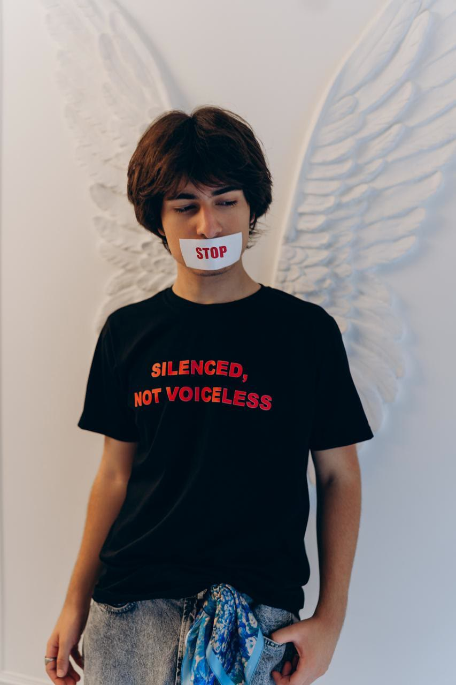
The idea
Photographed with a strip of tape marked STOP over the mouth. The line is about women who live with violence or unfair treatment and stay quiet because of fear, shame or pressure from their family. They have plenty to say. Something stops them from saying it.
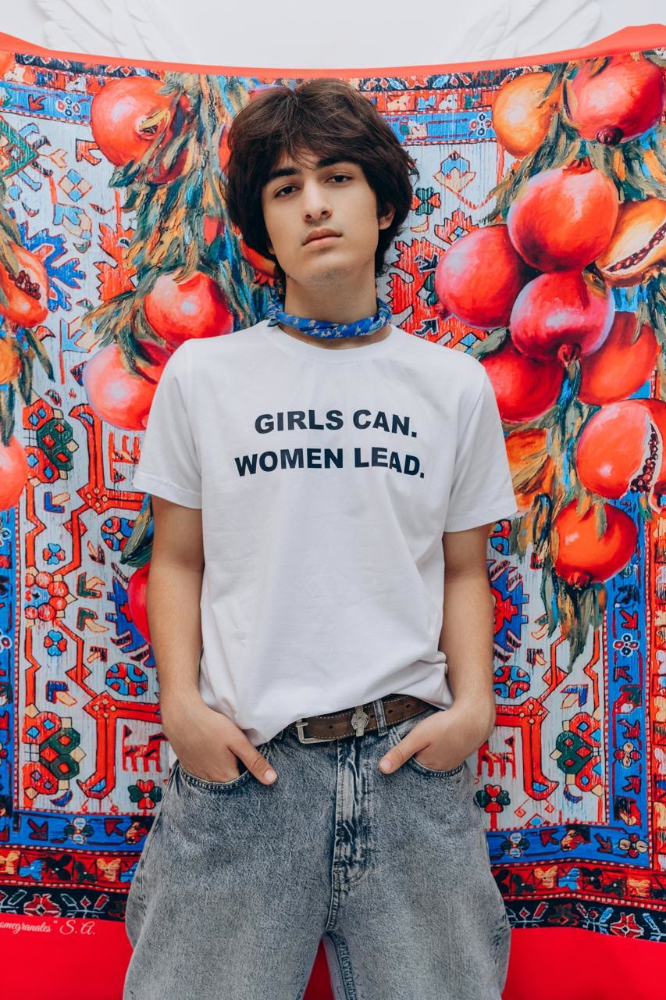
The idea
Azerbaijan has its own history of women who went first. The Azerbaijan Democratic Republic gave women the vote in 1918, one of the first Muslim-majority countries to do so, and in 1938 Ayna Sultanova became the country's first woman government minister. The shirt links girls' ambitions today with that history.
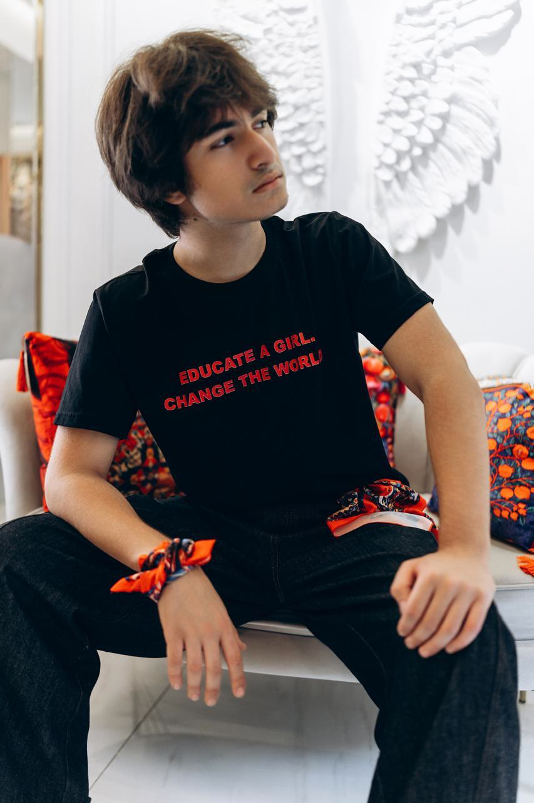
The idea
Studies by UNESCO and the World Bank link more years of school for girls with later marriage, healthier children and higher family income. The slogan says that one girl's education reaches far beyond her.
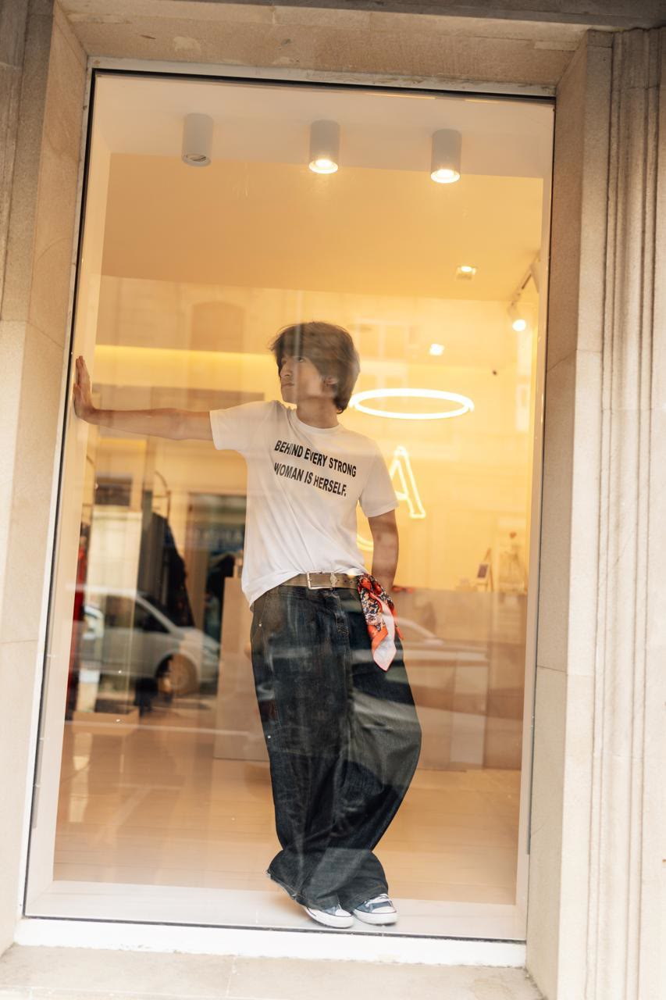
The idea
A reply to the old saying “Behind every great man there is a great woman”, which gives women credit only as helpers. The shirt turns the saying around: a woman's strength is her own.
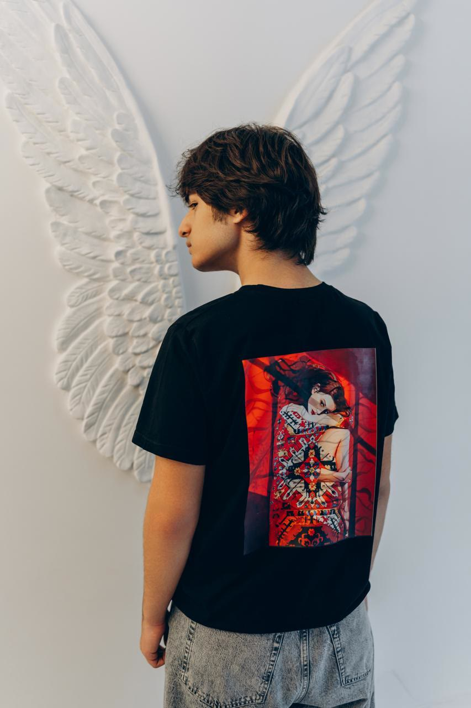
The idea
One shirt carries a painting instead of words: a woman wrapped in a red Azerbaijani carpet. Amorini Concept prints work by living artists rather than stock designs. Carpet weaving is one of the best-known Azerbaijani crafts and has been on UNESCO's list of intangible cultural heritage since 2010. Here the carpet surrounds a woman instead of hanging on a wall.
Background
Women's rights in Azerbaijan, in four numbers
Azerbaijani law gives women and men the same rights. Everyday attitudes have changed more slowly. These figures, taken from published sources, show both sides.
- 1918
The Azerbaijan Democratic Republic gave women the right to vote, one of the first Muslim-majority countries to do so.
- 2010
Parliament passed the Law on Prevention of Domestic Violence, the country's first law dealing specifically with violence in the family.
- 40%
of people asked in a 2012 survey agreed that a woman should put up with violence to keep the family together.
- 116
boys were born for every 100 girls in 2011–12. The natural figure is about 105. Researchers link the gap to sex-selective abortion.
In the World Economic Forum's Global Gender Gap Index for 2025, Azerbaijan ranked 100th of 148 countries. The campaign was a small answer to the distance between the law and daily life: it put the message on clothes that people see in the street.
Sources
- Women in Azerbaijan, Wikipedia (1918 vote, 1938 minister, 2010 law, 2012 survey, Gender Gap Index)
- The Mystery of Missing Female Children in the Caucasus, International Perspectives on Sexual and Reproductive Health, 2013
- Sex selective abortions worry Azerbaijanis, Al Jazeera, 2013
Photographs
From the shoot
Most of the photographs were taken in and around the Amorini Concept shop in Baku.
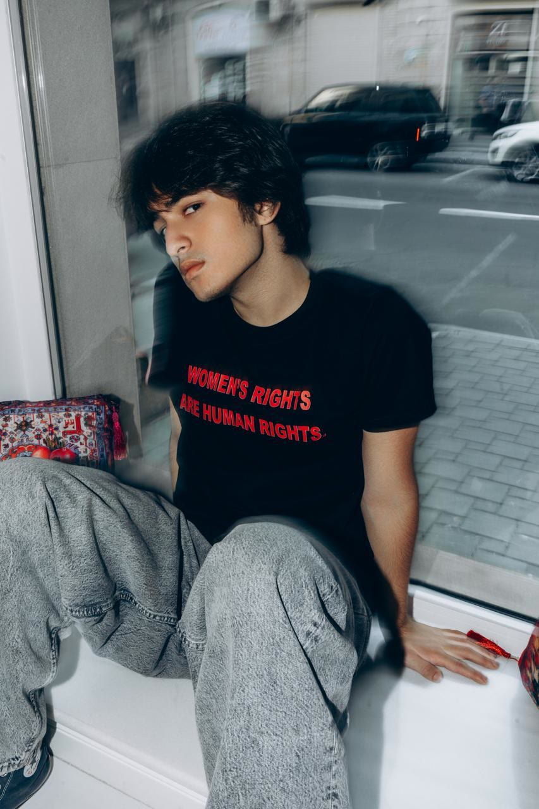
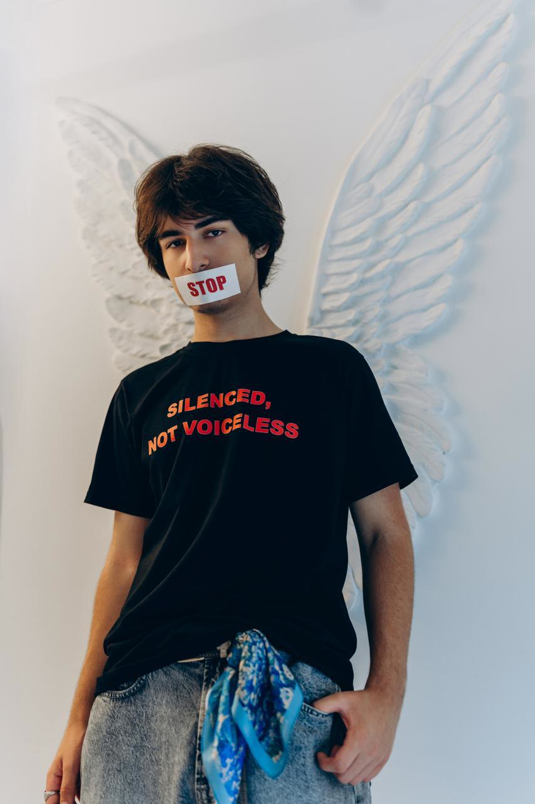
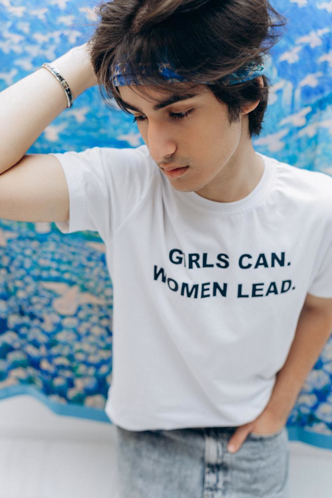
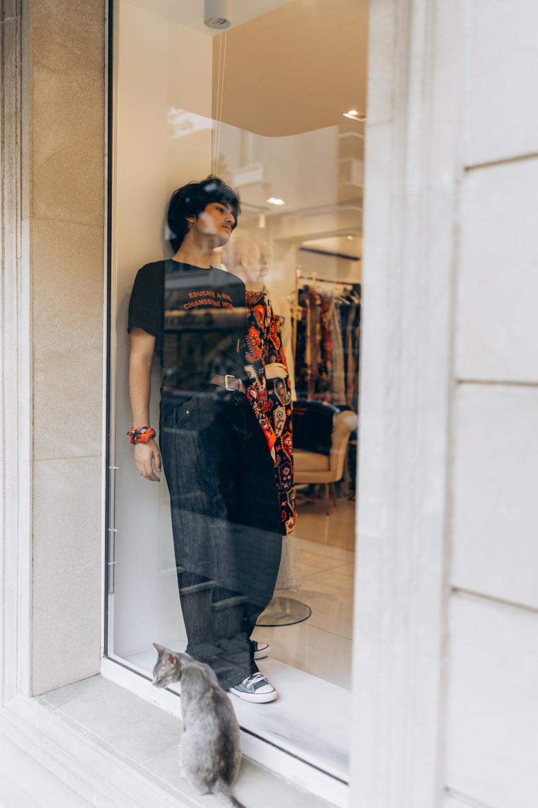
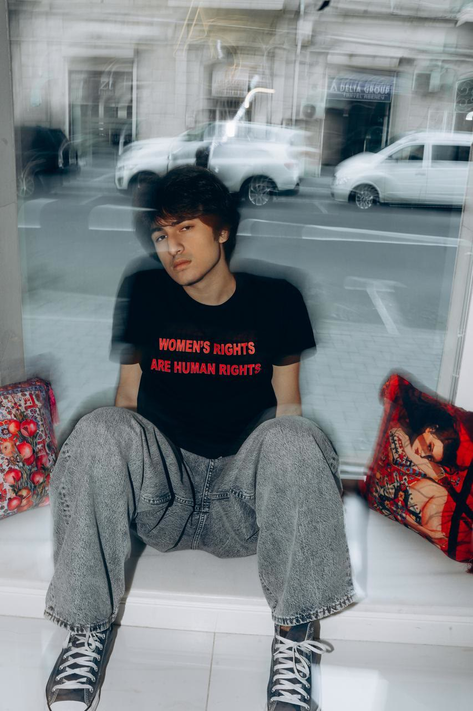
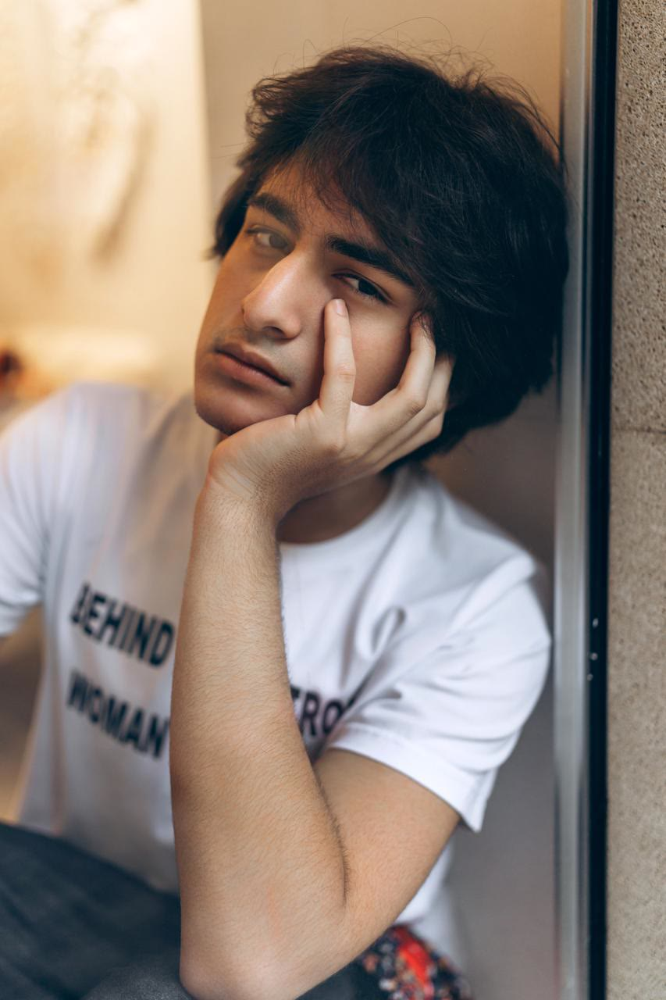
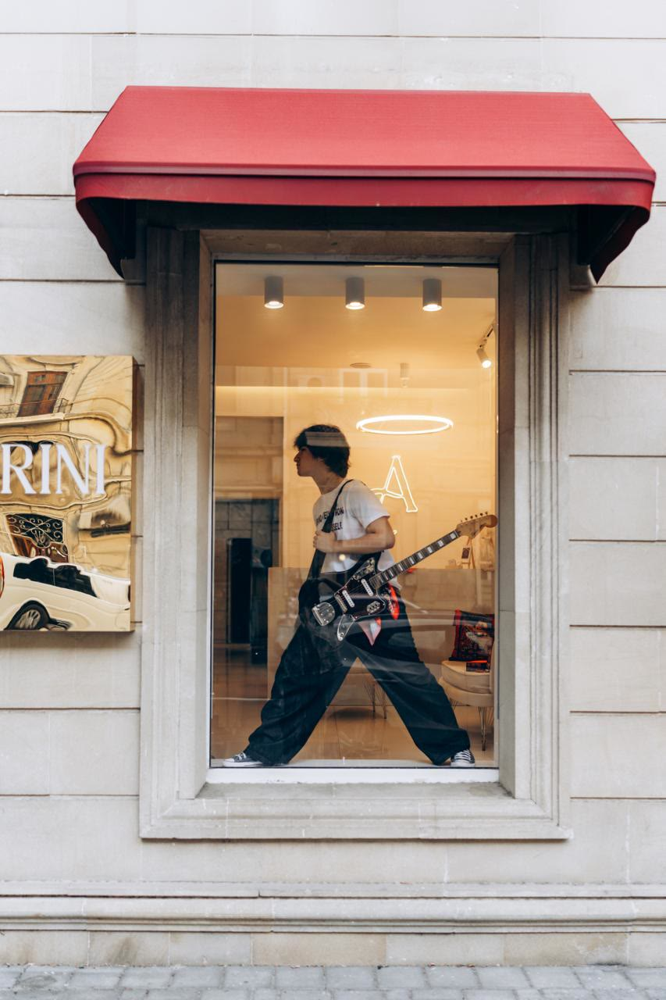
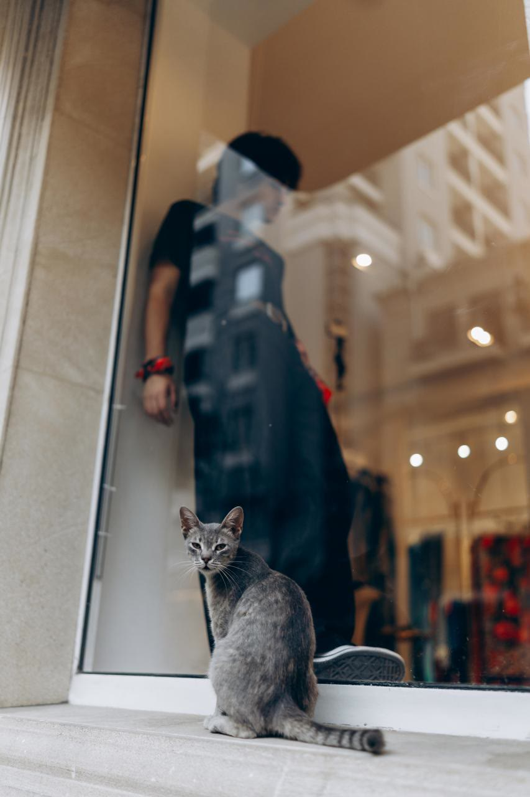
Credits
Who made it
- Brand
- Amorini Concept, Baku
- Founder
- Günay Aliyeva
- Model, slogans and styling
- Jamal Naghizade, with the brand
- Photography
- A professional photographer working with the brand
- Painting on the back print
- An artist who works with Amorini Concept
- Pomegranate backdrop
- Painting signed “S.A.”
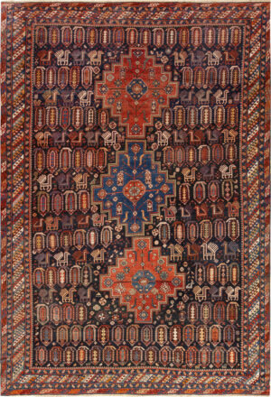
Contact
Get in touch
For questions about the campaign: